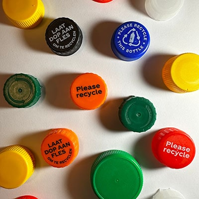
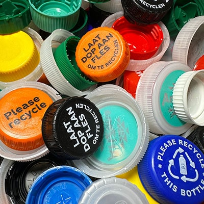

Supporting charities
A very important part of Wasteboards production is of course getting the plastic bottle caps, since the skateboards are mainly made from that recycled material. And the organizations collecting these plastic bottle caps do so to sell them and donate the money to a good cause, in this case, guide dogs.
So if you are curious, and want to know more about these organizations and charities, then do keep reading, to find out how this interesting system works, and how the plastic bottle caps reach their destination, and where the money ends up.
The collectors
It first starts of course with the people who collect the plastic bottle caps and drop them off at collection points.
Then there are voluntary organizations that take care of collecting the caps and selling them to support the training of guide dogs. I will mention two, that are also partners with Wasteboards. These organizations are Stichting OOGappeltjes and Stichting D-Dog.
Stichting OOGappeltjes
The goal of this organization is, besides helping guide dogs, is to keep the environment clean, every plastic bottle cap not ending up in the environment is a win.
With the money made from the bottle caps, the organization financially helps with the training of guide dogs. So that everyone that needs a guide dog has the possibility to get one.
It takes quite some effort to collect all the caps and sell them, specially since it costs around 5000 euros to pay for the starter training of a guide dog. So every bit of collecting helps.
Want to find out more? Visit their website.
Stichting OOGappeltjes Stichting D-Dog
An organization by volunteers, to also collect plastic bottle and jar caps, to sell for financial supporting guide dogs. These plastic caps are sold and used for different purposes. One partner is Wasteboards.
One of their main focuses is to create a good structure between, collectors, collection points, transport, and buyers. This with the aim of collection as much money as possible for the guide dogs.
Want to find out more? Visit their website.
Stichting D-Dog The organization behind the guide dogs
Then there is KNGF geleide honden (guide dogs). The organization where the money from selling plastic bottle caps goes to. They train the dogs and find foster homes for the first year of the puppy’s life.
The dogs that KNGF train, can help people in many ways. They can help people with visual impairments, people with handicaps that simply need some assistance, become a buddy to kids with impairments, and help people with PTSD (Post Traumatic Stress Disorder) as a loyal and kind buddy.
That shows the main mission of KNGF, to help people live a more independent life. That people do not have to depend on other people as much, but instead have their buddy, and live more freely by themselves.
Want to learn more? Visit their website
KNGF guide dogs